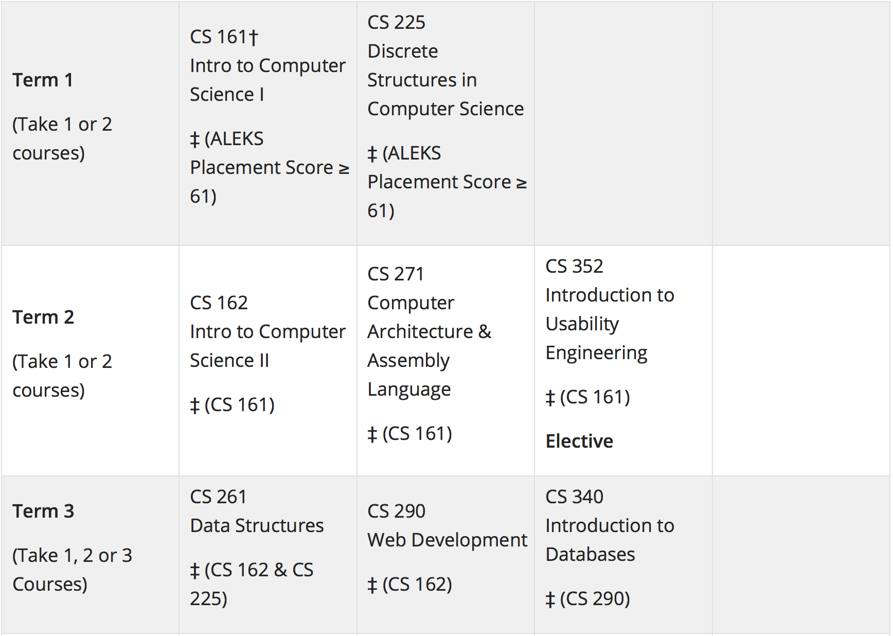
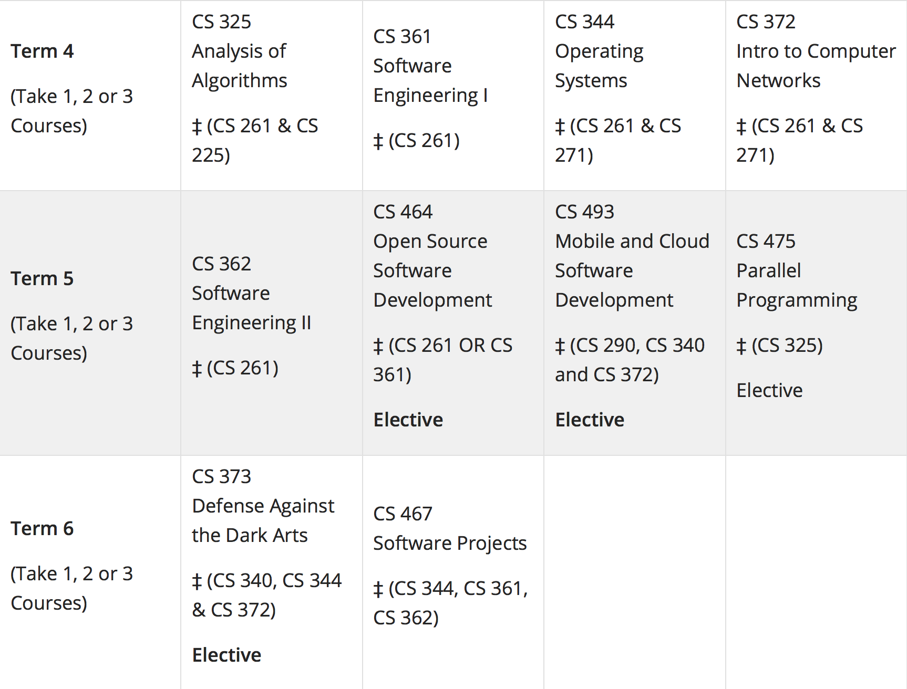

Oregon State University "Postbacc" Computer Science
The following is my current course of study:
 
Grand Canyon University Bridge to a Masters Degree in Cyber Security
My second option would be as follows: